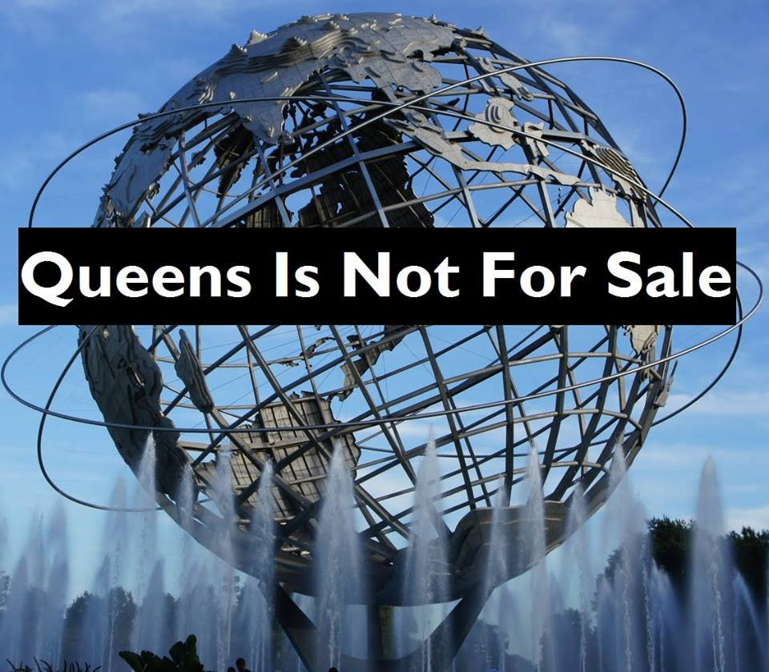

<!DOCTYPE html><html lang="en"><head><meta charset="utf-8"><meta name="viewport" content="width=device-width, initial-scale=1"><title>QueensNot4Sale</title><!-- #link(href='picnic.min.css', type='text/css', rel='stylesheet')--><link rel="stylesheet" href="https://unpkg.com/tachyons@4.5.3/css/tachyons.min.css"><link href="style.css" type="text/css" rel="stylesheet"></head></html><body><div id="wrapper"><div class="fl w-100"><h1 class="oswald">QUEENS NOT 4 SALE</h1></div><div class="fl w-100 pb3">       <div class="bg-black"><h2 class="tc light-blue"> Statement from Queens Is Not For Sale</h2></div><h5 class="i">October 5th, 2016</h5><p>To the attendees of the Queens real estate conference taking place in Long Island City:</p><p>We are here today because we represent the people of Queens that the Mayor’s affordable housing plan has left out.  We are domestic workers, fast-food workers, taxi drivers, day laborers, seniors, among others, and now that includes nearly 60,000 homeless individuals staying in shelters every night.</p><p>Queens is being billed as the ‘new frontier’—a place with a ‘diverse landscape’ that is ‘ever-growing.’  Unfortunately, the next rezoning approval, property purchase or portfolio expansion you make means more displacement for our communities.  This new frontier has been our home for many years.</p><p>For us, the people that run this city, this means higher rents as more luxury housing is built in our working class neighborhoods.  For small businesses, this means lease renewals they can’t afford, especially as BIDS are proposed along popular corridors where expensive chain stores are favored over street vendors.  For tenants along the waterfront where the BQX street car is being proposed, this means a faster path to gentrification. </p><p>To the elected officials that are meant to represent us, Melinda Katz, Jimmy Van Bramer, and Elizabeth Crowley—you don’t deserve the support of the people if you are at a real estate conference supporting developers only looking to make profits.  And Maria Torres-Springer, you said you would work hard to create livable neighborhoods through your position as head of EDC, but livable neighborhoods can’t be created as long as real estate developers sell of our neighborhoods.</p><p>You ask, what’s the deal with Queens? We say to you, there is no deal because QUEENS IS NOT FOR SALE!  Tenants throughout Queens are standing up and resisting the harassment, bad conditions, and mistreatment.  The housing crisis was created because the city continues to enable the practices of predatory developers and landlords but QUEENS IS NOT FOR SALE because we are fighting back against your greed.</p></div><div class="fl w-100"></div></div></body>